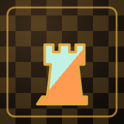
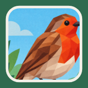

Jocs de taula

Escacs de Pedra Onitama
CubirdsObre cada joc amb Safari i fes Compartir → Afegir a la pantalla d'inici.

Escacs de Pedra Onitama
CubirdsObre cada joc amb Safari i fes Compartir → Afegir a la pantalla d'inici.